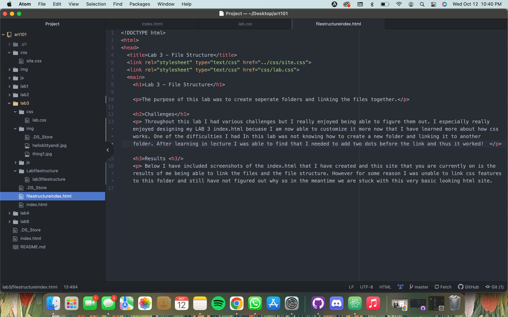

Lab 3 - File Structure
The purpose of this lab was to create seperate folders and linking the files together.
Challenges
Throughout this lab I had various challenges but I really enjoyed being able to figure them out. I especially really enjoyed designing my LAB 3 index.html becuase I am now able to customize it more now that I have learned more about how css works. One of the difficulties I had In this lab was not knowing how to create a new folder and linking it to another folder. After learning in lecture I was able to find that I needed to add two dots before the link and thus it worked!
Results
Below I have included screenshots of the index.html that I have created and this site that you are currently on is the results of me being able to link the files and the file structure. However for some reason I was unable to link css features to this folder and still have not figured out why so in the meantime we are stuck with this very basic looking html site.
